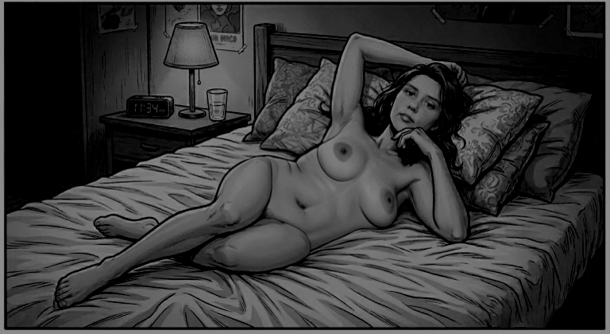

This is a work of fiction. Names, characters, places, and events are either products of the author’s mind or are used in a made-up way. Any likeness to real people, living or dead, or actual events is totally by chance.
My name is David. I was raised to operate at a higher level.
From an early age, I understood structure, expectation, and the necessity of precision. Others drifted. I did not.
That’s not arrogance; it’s just fact. In our upper-middle-class neighborhood on Long Island, most kids were comfortable drifting through life. I wasn’t.
My father, Aaron, commuted into the city every day, disciplined and pragmatic, a man who understood that reputation and achievement were everything. My mother, Betty, was a homemaker who devoted herself to raising us correctly. She ran the house with quiet precision—meals, routines, expectations. She didn’t need a corporate title; her job was building a family that succeeded. And we did.
In our house, success wasn’t debated. It was assumed.
I delivered. Honor roll year after year. Teachers used my name when they wanted to point to potential. On the baseball field, I liked the simplicity of dominance—the clean crack of the bat, the certainty of results. I learned early that I was ahead of most people around me, academically and otherwise.
Maura O’Brien fit neatly into the life I was building. She was cute, studious, organized—the quintessential nice girl. Not wild. Not reckless. She kept her head down, did her work, respected structure. Her father was a firefighter—steady, civic-minded. Her mother was a homemaker who kept their household warm and orderly. Maura wasn’t chasing thrills; she was planning a future. That aligned with me.


By junior year of high school, we were inseparable. Study sessions, long talks about careers, grad school, cities we might live in. When college acceptance letters arrived, everything fell into place. I was accepted into a prestigious business school outside Boston to study finance—exactly where someone like me belonged. Maura chose a public college ten miles away for communications. Close enough to maintain us. Logical.
Success wasn’t optional—it was assumed. That assumption became the foundation of everything that followed.
The first two years of college went exactly as expected. I immersed myself in finance—case competitions, internships, networking. I wasn’t just getting grades; I was building a serious trajectory. Maura did well too. We both made the honor roll. Weekends were ours—dinners, quiet nights, and walks across campus. From the outside, we looked unshakable.
By spring of 1993, pressure was mounting. Junior year. Recruiting conversations beginning. My world was expanding quickly.
And I cheated.
Not a kiss. Not some harmless flirtation. I slept with another woman.
It wasn’t complicated. I didn’t agonize over it. I didn’t re-evaluate my life. I was a high-performing finance student with a clear future, surrounded by opportunity. If I wanted something, I took it. That didn’t mean I stopped valuing Maura. It was a momentary lapse, barely a ripple in the trajectory I was building. Success demands flexibility; I never defected from Maura the way she would from me.
The afternoon Maura came to surprise me at school, she saw enough to understand what had happened. I didn’t see her. But she saw the woman leaving. She saw the intimacy.
Later, she called me. Her voice was shaking. She said she’d seen everything. She reminded me she’d chosen her college partly because of me. That she’d structured her life around us. She said she deserved better.
I denied it at first out of instinct. But she described too much.
Then she broke up with me.
That’s what stuck. Not the accusation. The decision. She walked away. As if she had the authority to close the door.
We both went home to Long Island for the summer. She ignored my calls. Weeks of silence. Eventually, after repeated apologies and assurances from me that it wouldn’t happen again, she agreed to try again.
During one of those tense conversations, she told me about Phil.
After hanging up on me that day, she’d gone to the library. Crying. Phil approached her. A guy she might have vaguely recognized from campus. He listened while she explained what had happened. He said things like “guys can be idiots.” Positioned himself as sympathetic.
After about twenty minutes, he suggested they grab food and drinks that night to get her mind off it.
She agreed.
They went to a crowded restaurant/bar near school. Loud. Packed. They drank. He leaned in close. Touched her arm. Rested his hand at her lower back moving through the crowd.
Then they went back to his apartment.
They sat on his couch. They started kissing almost immediately. His hands moved over her body as he undressed her. More insistent. Foreplay. Manual stimulation.
But she told me she stopped it before it went further. That she started crying. That she told him she couldn’t do it. That he drove her back to campus.
She presented it as heartbreak. As a moment of weakness.
I saw it differently.
Yes, I had slept with someone else. But I hadn’t defected. I hadn’t sought emotional comfort. I hadn’t invited another woman into my vulnerability. What she did felt reactive and disloyal.
She allowed another man into my space—into the vulnerability that belonged to the life I had structured for us. Phil hadn't just listened; he had tried to claim what was mine by right. That moment wasn't weakness on her part. It was the first fracture in the world that was supposed to orbit my achievement. Even if little physical happened, the intent was there. I felt it like a theft of my future.
And Phil—Phil had knowingly stepped into that space.
She broke up with me as if she had the authority. That assumption—that anyone could close a door on me—planted the seed. Not anger. Clarity. The universe had tested whether I would accept ordinary rules. I would not.
That’s when the grudge formed.
By October ’93, my anger had sharpened into something methodical. I began looking for him. I drove past the apartment Maura said she’d gone to, but it was a giant complex with hundreds of units. Sat in my car watching the building. Eventually I learned from a neighbor that he had moved out.
That only made it worse. I checked the yearbook at Maura’s school… nothing. I tried the registrar without luck. I tried looking at the phone books in the library… nothing. 4-1-1 was also no help. He had disappeared.
My mind couldn’t let it go. Any time my eyes saw a list of names, I’d check to look for Phil.
One day while I was killing time at a Dunkin’ waiting for Maura, I picked up a discarded local paper, the Middlesex News. I didn’t find many articles of interest as I quickly flipped through. Then unbelievably, I saw his name. Phil… a public announcement that he had been promoted to Deputy Director at City Hall, just one town away.

The next afternoon, I drove there.
I walked in composed, asking routine questions about permits and local procedures at the front counter while scanning the office. Then he came out from a hallway in the back.
I instantly knew that it was him.
I didn’t confront him. That would have been sloppy. I observed. Memorized his face. His voice. His posture.
Over the next several weeks, I returned occasionally, careful not to draw attention. I learned when he arrived. When he left for lunch. Which direction he drove at the end of the day.
On two separate occasions, I followed him at a distance as he left work. Both times, he stopped at a car dealership a few miles away. He spent time talking to a young saleswoman. They stood close. Laughed. It looked personal.
An idea formed.
I visited the dealership during business hours. Pretended to browse. When the saleswoman stepped away from her desk to help another customer, I quietly took one of her business cards.
Liza.
The plan was simple: return on a weekend for a test drive, ask specifically for Liza, win her over, and get back at Phil in the same way he tried to do to me.
But when I returned asking for her, I was told she no longer worked there. No forwarding information. I called the dealership again later. Drove past nearby businesses.
Nothing.
The trail went cold.
Nearly a year passed. By May of 1995, Maura and I were still together, grinding through the slow, ugly work of pretending the fracture had healed. We were out of college, living separately with roommates, a year into our first real jobs. Another two years of careful performance would pass before we moved in together. My finance career was already accelerating exactly as planned—structured, ruthless, inevitable.
My uncle from the Boston north shore handed me the keys to his modest summer house near Cape Cod. Cedar shingles, tucked away in the pines, fifteen minutes from the beach but a universe removed from anyone who mattered. Downstairs: the standard rooms. Upstairs: two bedrooms and a bar stocked with bottles no one would miss. It was perfect. Isolated. Private. A place where the rules I refused to live by simply didn’t apply.

Josh and I started slipping down there on weekends. Sometimes Maura and Josh’s girlfriend came along, laughing like everything was normal. Most times it was just us—two wolves shedding their weekday skins. When it was only the two of us, we hunted the local bars after dark. Women came back easily. The sea air, the isolation, our practiced charm. I wanted to keep the moments. Not as memories. As proof. Proof that I could take what I wanted and preserve it forever.
I knew who to ask. Back in the city, near Grand Central, I found the right electronics hole-in-the-wall. The wiry guy behind the counter didn’t need much explanation. He understood the assignment. Pinhole camera for the VCR. Black-and-white for low light. No audio—federal wiretap laws were for lesser men. He showed me the A/B switch, the concealment tricks, the Sharpie trick to kill the glowing lights. Cash only. No receipt that mattered.


I installed the rig in the bar in under fifteen minutes the next trip down. That same night the system performed flawlessly. Josh watched the playback and grinned like a man who’d just been handed the keys to the kingdom.
I ordered two more rigs the next day. Full setups for the bedrooms. My little empire of evidence was expanding.
Then, a few weeks later, the first Sunday evening after Memorial Day, Josh and I walked into Casino-By-The-Sea in Falmouth. Packed. Loud. Perfect.
And there she was.

Liza.
Eighty miles from the dealership where I’d first seen her with Phil. I did a double-take, then nudged Josh and laid it out fast—Phil, City Hall, the failed plan. He got it instantly.
We approached smooth. Confirmed it was her. Her friend was Mandy. Both locals. Both bored. Both open.
Drinks flowed. Conversation turned filthy. They agreed to follow us back to the house.
The videos were never just trophies anymore. They were leverage. Insurance. Proof that the universe owed me and I was collecting.
Back at the house the music stayed low. The pairs split into bedrooms. I’d wanted Liza—the direct strike at Phil—but Josh claimed her. I got Mandy by default. It didn’t matter. Liza was still under my roof, still being recorded. That was enough.
Mandy was compliant the second the door clicked shut. She had that soft, overused look: dark untamed hair, a body already going slack in her twenties from too many nights and too many men. Her hips and belly carried extra padding that jiggled faintly when she moved—the kind of ruined softness that came from being ridden hard and put away wet far too often.
I stripped her without ceremony. She simply lay back, legs spreading in lazy invitation, eyes half-lidded like she was already bored with the transaction. She mumbled her two rules like she still had any power: nothing in her ass, and she wasn’t sucking dick tonight. I didn’t argue. I simply pushed her legs wider and drove into that sloppy, well-fucked cunt in one hard thrust.

She gasped once, then went quiet again, mentally checked out while her soft body took the pounding. I fucked her deliberately, watching her heavy tits and padded belly jiggle with every punishing stroke. I didn’t give a fuck about her pleasure. This was revenge. Every thrust into Mandy was a direct fuck-you to Phil, because next door Josh was buried balls-deep in Liza—the very woman Phil desired. I was claiming the prize he craved, still marking territory he’d tried to steal from me through Maura.
Mandy's pussy felt exactly as she looked: loose, sloppy, and worn-out, a slack, yielding hole with no tightness left, just wet, sloppy familiarity that swallowed me without resistance. A dead lay. No grip, no fire, no hunger—just warm, overused meat ready to be used.
At the same time, I took my own raw pleasure in it. Mandy was nothing but a lazy, cum-hungry slut who spread her legs for free drinks and dick. Her ruined pussy stayed loose and sloppy around me, gripping nothing, just yielding like warm, overused meat that had taken far too many cocks before mine. She was the perfect disposable toy—soft, jiggly, and already destroyed. I pounded that tired cunt like the worthless cum-dumpster she was, using her body to empty my balls while the real satisfaction came from knowing Josh was next door taking Liza.
When I finally unloaded deep inside her with a low grunt, I felt complete: revenge satisfied, and my cock properly rewarded by another night’s worthless slut.
I pulled out and left her lying there, legs still splayed, my load leaking from her used-up, sloppy hole onto the sheets like the well-fucked, brainless slut she’d always been.

The next morning over coffee, Josh mentioned he’d talked to Liza before she left. Single. No boyfriend. No Phil connection. Just two local sluts out for free drinks and dick.
The revenge fantasy I’d nursed for two years evaporated in that kitchen. There was no rival to wound. No direct betrayal to punish.
Josh shrugged it off. “At least it wasn’t a wasted night.”
Outwardly I agreed. Inside, the truth sharpened into something colder. The lack of connection didn’t erase the violation—it proved the universe had been mocking me the entire time. Maura had let chaos in through Phil’s circle. Mandy was just the next link in the chain. The grudge hadn’t died. It had simply grown teeth.
Josh never saw Liza again.
For the next month I kept Mandy on call—convenient, emotionless, a step above jerking off. Sometimes I’d text her to come over even when I wasn’t in town just to see if she’d jump. She usually did. She was useful. A warm hole when I needed one. A cum dumpster with a pulse.
Eventually she stopped answering. I assumed she’d found the next cock. Didn’t matter. She and Liza faded into the background noise—irrelevant the moment they stopped serving a purpose.
The Cape house stayed. The cameras stayed. Maura’s original sin with Phil stayed.
And I kept collecting.
It wasn’t about revenge anymore. It wasn’t even personal. It was procedural. Clinical. Every weekend we set the cameras the same way—same angles, same concealment, same cold efficiency. Before we left for the bars I’d flip the switch, activate the VCRs, and know that whatever happened would be preserved forever. Proof that I controlled outcomes. Proof that ordinary rules were for ordinary men.
Maura’s lapse with Phil remained the silent benchmark. Every new tape was another quiet fuck-you to that night in 1993. I had never lost control. I had simply been patient while the universe caught up.

None of it touched my real life. Monday mornings I was back in the city in pressed shirts, closing deals, building the reputation that would carry me for decades. Josh did the same. We never discussed the tapes beyond logistics. It was understood. Compartmentalized. Clean.
Eventually the house had to go. My uncle sold it. I handed back the keys without a word. No ceremony. Just another asset repositioned.

Around the same time life kept marching forward on schedule. Josh married his girlfriend. I married Maura. Weddings, photos, families beaming like everything was perfect. We had children. Mortgages. Promotions. The surface looked exactly like the success I had always assumed.
The tapes were boxed up and stored in a locked drawer in my office. Out of sight, but never out of mind. By 2003 the VHS felt prehistoric. I spent quiet nights in my home office digitizing every single one onto encrypted drives. Originals destroyed. Risk eliminated. Control absolute.
I offered Josh copies. He wanted his deleted—except for Liza. I kept hers anyway. Didn’t bother me. I didn’t need his validation. The collection was mine now. Private. Safe. I could watch whenever I wanted, on my terms, and feel that old thrill of absolute ownership.
But it wasn’t enough.
I started seeking others who operated on the same level. Online communities of men with the same dark appetites. We traded footage. I had premium material. They had theirs. The network grew. It stopped being about the women and became about the power—the shared understanding that rules were suggestions for the weak.
Editing became part of the game. Blurring faces, cropping identifiers, turning raw conquests into anonymous product. I got very good at it. The line between what was done and what could be proven vanished. I crossed it without hesitation. Regret was for men who still believed in consequences.
For a while, the collection and the network kept me satisfied.
Until 2015, when social media ripped open the old wound and handed me everything I needed to finish what I started.